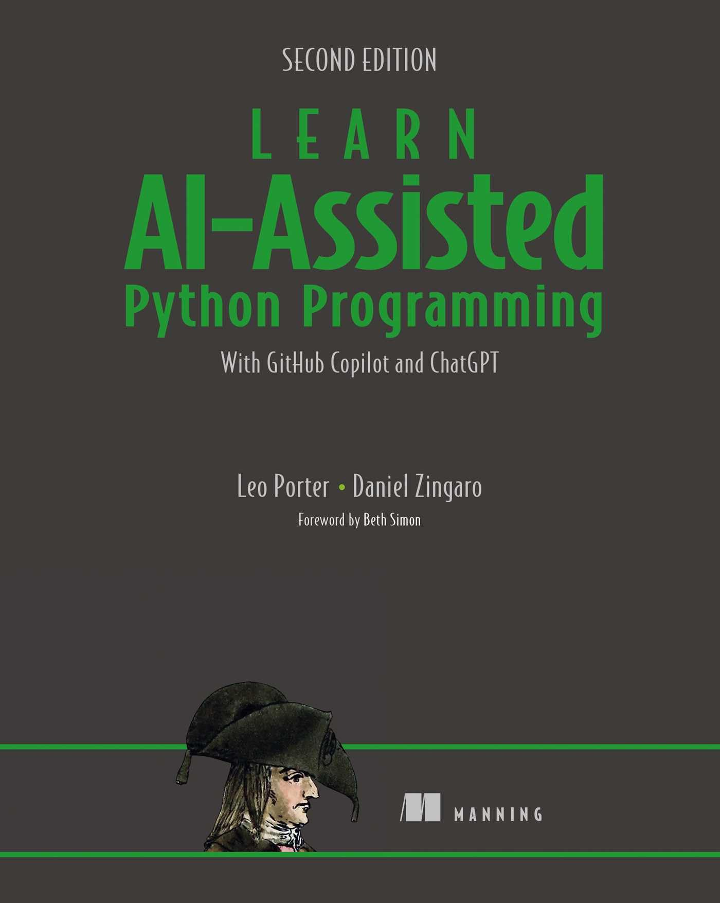

flowchart TD A(Defina o comportamento desejado da função) --> B(Escreva um prompt que descreve a função) B --> C(Use o Copilot para gerar o código) C --> D(O código parece razoável?) D --Sim--> E(Escreva casos de teste usando pytest) E --> F(Rode os testes. Passou nos testes?) F -- Sim --> G(Escreveu todos os casos de testes?) G -- Sim --> H(Pronto!) G -- Não --> E D -- Não --> I(Explore alternativas do Copilot. Alguma parece razoável?) I -- Sim --> E I -- Não --> J(Revise o prompt para melhorar a descrição da função) J --> C F -- Não --> J
Testes
PASIA - Aula P.3
DAC - ICET - Universidade Federal de Lavras
24/08/2026
O conteúdo dessa aula é baseado no capítulo 6 do livro abaixo.

Por que é essencial testar código?
Já mencionamos nas aulas anteriores sobre testes de código.
- Testar código é uma habilidade essencial porque nos dá confiança de que o código funciona apropriadamente.
É importante que você adquira essa habilitade e consiga conferir por você mesmo se o seu código funciona.
- Mesmo que o Copilot possa ser usado para gerar testes (e ele está ficando cada vez melhor nisso),
- entendemos que você deve ser capaz de escrever testes por conta própria, para verificar se um código gerado pelo Copilot está correto.
Programadores iniciantes geralmente têm aversão a testes (e mesmo nem tão novatos assim).
- Eles têm dificuldade de perceber que, mesmo que um código pareça fazer sentido, ele pode conter erros sutis.
- Há também um sentimento de que “se eu testar vou descobrir que tem problema, então melhor deixar quieto”.
Engenheiros de Software profissionais seguem uma abordagem completamente oposta.
- Eles levam testes extremamente a sério, porque sabem o quanto isso pode trazer de consequências para suas empresas.
- Ninguém quer ser a pessoa que
- causou um prejuízo enorme para sua empresa ou para algum de seus clientes;
- deixou hacker obter acesso a dados confidenciais de usuários;
- ou causou um acidente de um carro autônomo.
Dado o potencial custo de um erro, faz muito mais sentido assumir que o código está errado até que se prove o contrário.
Apenas com testes rigorosos podemos ter confiança de que o código funciona apropriadamente.
- Empresas geralmente não testam uma única vez.
- Possuem toda uma metodologia e infraestrutura de testes contínuos para garantir que tudo funciona a cada alteração no código.
TDD
Algumas empresas levam isso tão a sério que seguem uma abordagem chamada TDD - Test Driven Development.
- A ideia central é escrever primeiro os testes e depois a função/módulo a ser testado.
Não vamos seguir essa abordagem aqui,
- mas precisamos nos lembrar que assistentes de IA erram e precisamos verificar nossos códigos.
Testes de Caixa-Preta e de Caixa-Branca
Testes de Caixa-Preta
Testes de Caixa-Preta assumem que não sabemos nada sobre como o código funciona.
- Apenas sabemos o que ele deve fazer.
- O teste envolve então experimentar diferentes entradas e verificar se as saídas estão corretas.
Podemos aplicar testes de caixa-preta a cada função ou a um programa inteiro.
- Uma vantagem desse tipo de teste é que não precisamos olhar o código para escrevê-lo.
- Focamos apenas no comportamento desejado do código.
Como exemplo, suponha que precisamos testar uma função que pega uma lista de palavras (strings) e retorna a maior delas.
Há duas categorias principais que costumamos pensar ao escrever testes.
- Casos de uso comuns: incluem as entradas que imaginamos que serão utilizadas na prática.
- Casos de borda (edge cases): são casos incomuns, mas possíveis, que podem quebrar o código.
- Há entradas que podem testar algumas regras da função em maior profundidade ou que contenham entradas inesperadas (ex. uma lista contendo só strings vazias).
Casos de uso comuns
Pensando na função maior_palavra, vamos pensar nos casos de testes que deveríamos usar.
- Para especificar os casos de testes vamos escrever como se estivéssemos usando um terminal Python.
Começando com casos de uso comuns:
Casos de uso comuns
Podemos agora testar uma lista com mais palavras e com a maior palavra aparecendo em outra posição da lista.
Casos de borda
Se o programa estiver funcionando para esses casos de testes comuns, é hora de pensarmos nos casos de borda.
- Podemos começar testando o caso de termos empate na maior palavra,
- que, pela especificação da função, deve ser retornadada a primeira delas.
- Obs.: algumas pessoas podem considerar esse um caso comum e outras um caso de borda.
Casos de borda
E se nenhuma palavra tiver caracteres?
- A maior palavra é uma string vazia.
Dica
Em códigos que usam loops é muito comum que erros ocorram em verificações do primeiro ou do último elementos, por falhas na construção da lógica do loop.
Assim, se presumimos que uma função pode ter que percorrer uma lista, ou algo similar, é interessante pensarmos em casos de borda sobre isso.
Casos de borda
E como deveríamos testar o caso do método ser chamado com uma lista vazia?
- Veja que, neste caso, a especificação do comportamento da função não é clara.
- A função poderia retornar
Noneou poderia gerar uma exceção, por exemplo.
Testes de entrada incorreta
Há ainda um outro tipo de teste que poderíamos pensar, que é o caso da função ser chamada com parâmetros errados.
- Como Python é fracamente tipado, nada impede que a função
maior_palavraseja chamada com tipos de dados inesperados, como números, lista de números,None, etc.
Nessa aula vamos ignorar esse tipo de situação.
- Mas em sistemas em produção isso é algo importante.
- E, para esse caso, type hints podem ser mais interessantes do que testes exaustivos.
Como saber quais casos de testes usar
Podemos começar considerando os tipos de dados dos parâmetros e variando seus valores.
- Se o parâmetro for uma lista (ou string), podemos verificar testar vazia, com um ou com vários elementos.
- Na maioria das vezes, “vários” podem ser 4 elementos.
- Já que é improvável que uma função funcione para 4 elementos mas não para 5, 6 ou mais.
- Já para uma função que recebe dois números, podemos pensar em testes considerando quando
- um deles é zero, os dois são zero, um é negativo, ambos são negativos ou ambos são positivos.
Como saber quais casos de testes usar
Outro tipo de caso de teste é levar em conta o comportamento específico da função.
- Como no caso do empate da função
maior_palavra.
No final das contas, como já mencionamos, testar é uma mistura de ciência e arte.
- A prática é o melhor caminho para que descubra os melhores testes para suas necessidades.
Testes de Caixa-Branca
A ideia do teste de caixa-branca é examinar o código para pensarmos em casos de testes adicionais que podemos escrever.
- Ao ler o código de uma função se vermos que ela usa um loop, devemos pensar nos casos comuns de erros com loops.
- Se houver uma estrutura condicional com verificação com
>ou>=, por exemplo, é outro caso a se avaliar.
A ideia, portanto, é usar o conhecimento do código a ser testado para completar os testes necessários.
Como testar seu código?
Qual é a estratégia de testes mais simples que podemos pensar?
- Podemos testar nossa função no terminal Python como fizemos nas aulas anteriores.
Quais são as vantagens de testes usando o terminal?
- É rápido de rodar.
- É fácil acrescentar novos testes de acordo com o resultado dos testes anterioress.
Mas e as desvantagens de testar usando o terminal?
Os problemas começam quando fazemos uma correção no código após detecarmos um problema em um teste.
- É muito comum que, ao corrigir um erro, lembremos de repetir apenas o teste que tinha falhado.
- Mas pode ser que a correção tenha provocado um efeito colateral em outros casos de teste que tínhamos verificado antes.
- E, portanto, o correto seria reexecutar todos os testes.
- E aí começa a ficar muito improdutivo seguir essa estratégia.
E qual seria a segunda abordagem mais simples para testar o código?
- Seria inserir os casos de teste no próprio código.
- Por exemplo, poderíamos inserir testes no mesmo arquivo da função
maior_palavralogo após a definição dela. - Mas isso seria muito ruim quando o código fosse usado em produção.
- Precisaríamos comentar esse código de teste, ou ter uma maneira de desabilitá-lo.
A melhor abordagem, na verdade, é usar um framework de testes.
- A biblioteca mais popular para testes em Python é a pytest.
- Ela permite escrever testes de forma simples e organizada.
- E, ao mesmo tempo, oferece recursos avançados.
Obs.: o livro de Potter e Zingaro usa o módulo doctest, que é parte da biblioteca padrão do Python.
- Ele é útil para testes bem simples, mas não é tão poderoso quanto o
pytest.
Instalando pytest
Nesta aula nós veremos apenas o básico do pytest.
- Mas que será suficiente para os testes que precisaremos fazer.
Implementando um teste com pytest
O módulo pytest fornece uma maneira simples de implementar testes.
- Nós, basicamente, escrevemos uma função para cada teste que queremos realizar.
- E, na implementação da função, usamos o comando
assertpara realizar o teste.
O comando assert
O comando assert serve para verificar se uma condição é verdadeira.
- Se for, o código continua sendo executado normalmente.
- Se não for, é lançada uma exceção
AssertionError. - É como se ele significasse: “Eu espero que isso seja verdade”.
Nós podemos ainda definir uma mensagem de erro personalizada.
- O formato é:
pytest e comando assert
O módulo pytest utiliza o comando assert para verificar se as condições dos testes são atendidas.
- Se todas as condições forem verdadeiras, significa que nosso código passou nos testes.
- Já se um
assertfalha, o Pytest automaticamente fornece informações detalhadas sobre os valores das variáveis envolvidas na comparação, o que simplifica muito a depuração.
Convenção de nomenclatura do pytest
O módulo pytest procura de forma automática os testes escritos em nosso projeto.
- Ele procura por arquivos que começam com
test_. - Dentro deles, procura por funções que começam com
test_. - Podemos ainda organizar os testes em classes, que devem começar com
Teste não podem ter construtor.
Vamos então implementar todos os testes que levantamos para a função maior_palavra.
- Vamos primeiro deixar clara a estrutura de pastas e arquivos que vamos usar.
Suponha que nossa função maior_palavra esteja implementada em um arquivo meu_app/main.py.
- Vamos então criar uma subpasta chamada
testese, dentro dela, criar um arquivotest_maior_palavra.py, onde escreveremos nossos testes.
A estrutura fica então assim.
meu_projeto/
│
├── meu_app/
│ ├── __init__.py
│ └── main.py
│
└── testes/
├── __init__.py
└── test_utilitarios.pyObs.: os arquivos __init__.py são arquivos vazios que servem para que suas pastas (meu_app e testes) sejam reconhecidas como módulos Python.
- É similar ao conceito de pacotes em Java.
No nosso arquivo meu_app/main.py, devemos implementar a função maior_palavra.
Já nosso arquivo test_maior_palavra.py ficaria então assim:
from meu_app.main import maior_palavra
def test_maior_palavra_unica():
assert maior_palavra(['gato', 'pássaro', 'cachorro']) == 'cachorro'
def test_maior_palavra_unica_lista_maior():
assert maior_palavra(['feliz', 'aniversário', 'para', 'meu', 'cachorro']) == 'aniversário'
def test_maior_palavra_lista_1_elemento():
assert maior_palavra(['feliz']) == 'feliz'
def test_maior_palavra_empate():
assert maior_palavra(['gato', 'cão', 'sapo']) == 'gato'
def test_maior_palavra_strings_vazias():
assert maior_palavra(['', '', '']) == ''
def test_maior_palavra_lista_vazia():
assert maior_palavra([]) is NoneRepare em um detalhe importante do último teste.
- Para verificar se o retorno é
None, usamosis Noneem vez de== None.
É que o operador == compara o conteúdo de dois objetos.
- De forma similar ao
equalsno Java. - Já o operador
isverifica se duas variáveis apontam para o mesmo objeto.- Que é similar ao
==do Java 😁
- Que é similar ao
Como None é um objeto único no Python, é mais eficiente e seguro usar is None para verificar se uma variável é None.
Execução do pytest
Agora, para executar os testes, basta executar o comando pytest na pasta principal do projeto.
Se nossa função passar em todos os testes, esse seria um exemplo de saída esperada.
Vamos agora forçar dois erros em nossa função maior_palavra
- para ver como o
pytestvai reportar esses erros.
Obtemos então a seguinte saída com pytest.
==================== test session starts =====================
platform linux -- Python 3.12.3, pytest-8.4.1, pluggy-1.6.0
rootdir: /home/julio/Downloads/aula_p2
collected 6 items
testes/test_maior_palavra.py ...F.F [100%]
========================== FAILURES ==========================
_________________ test_maior_palavra_empate __________________
def test_maior_palavra_empate():
> assert maior_palavra(['gato', 'cão', 'sapo']) == 'gato'
E AssertionError: assert 'sapo' == 'gato'
E
E - gato
E + sapo
testes/test_maior_palavra.py:13: AssertionError
_______________ test_maior_palavra_lista_vazia _______________
def test_maior_palavra_lista_vazia():
> assert maior_palavra([]) == None
^^^^^^^^^^^^^^^^^
testes/test_maior_palavra.py:19:
_ _ _ _ _ _ _ _ _ _ _ _ _ _ _ _ _ _ _ _ _ _ _ _ _ _ _ _ _ _ _
palavras = []
def maior_palavra(palavras):
# removemos a verificação de lista vazia
> maior = palavras[0]
^^^^^^^^^^^
E IndexError: list index out of range
meu_app/main.py:3: IndexError
================== short test summary info ===================
FAILED testes/test_maior_palavra.py::test_maior_palavra_empate - AssertionError: assert 'sapo' == 'gato'
FAILED testes/test_maior_palavra.py::test_maior_palavra_lista_vazia - IndexError: list index out of range
================ 2 failed, 4 passed in 0.04s =================Na saída anterior vemos que foram encontrados 6 testes dos quais dois não passaram
Em seguida são apresentados detalhes dos testes que falharam.
- Que nos ajudam a identificar o problema para corrigi-lo.
Atualizando o ciclo de projeto de funções
Nas aulas anteriores vimos o ciclo de projeto de funções.
- Vamos agora atualizá-lo para incluir a etapa de testes.
- A. Defina o comportamento desejado da função
- B. Escreva um prompt que descreve a função
- C. Use o Copilot para gerar o código
- D. O código parece razoável? Sim: E, não: I.
- E. Escreva casos de teste usando pytest
- F. Rode os testes. Passou nos testes? Sim: G, não: J
- G. Escreveu todos os casos de testes? Sim: H, não: E
- H. Pronto!
- I. Explore alternativas do Copilot. Alguma parece razoável? Sim: E, não: J
- J. Revise o prompt para melhorar a descrição da função e vá para C .
Praticando escrita de testes
Vamos agora praticar a escrita de testes.
- Para isso, você deve tratar as situações a seguir, seguindo todo o ciclo atualizado de projeto de funções.
Trataremos duas situações.
- A primeira com o objetivo de experimentarmos o uso da biblioteca
pytest. - Já a segunda com o objetivo de pensarmos em como testar funções que processam arquivos.
Situação 1
Suponha que esteja indo em grupo a uma sala de cinema
- e que vocês queriam escolher uma fileira de cadeiras que caiba todo o grupo sentado um ao lado do outro.
- Caso exista mais de uma fileira que caiba todo o grupo, vocês querem escolher a fileira que tenha o maior número consecutivo de assentos livres
- de forma que todos do grupo possam se sentar juntos de maneira mais confortável possível.
- Obs.: em caso de empate o grupo prefere a última fileira (mais ao fundo da sala).
Situação 1
Crie então uma função que atenda à necessidade do grupo.
- Ela deve receber uma matriz de booleanos (lista de listas) na qual cada lista representa uma fileira com os assentos ocupados (
True) ou livres (False). - E deve retornar o número da fileira com a maior quantidade de assentos consecutivos livres.
- Considerando que a primeira fileira é a de número 0.
- Caso não exista nenhuma fileira que caiba todo o grupo, a função deve retornar
-1.
Ao chegar na etapa E, de escrita de testes, pense em todos os casos de uso comuns e de borda que julgar necessários.
A ideia é que você só prossiga depois de achar que já terminou todos os testes
- Ou seja depois de já ter chegado no passo H do ciclo de projeto de funções.
Acabou mesmo? Tem certeza?
Já que terminou confira se tratou pelo menos os casos abaixo:
1. Uma fileira com mais assentos livres consecutivos que todas as outras e com mais assentos que o tamanho do grupo.
2. Uma fileira como do caso 1, mas com dois espaços não consecutivos suficientes para todo o grupo.
3. Uma fileira como do caso 1, mas com assentos livres do mesmo tamanho do grupo.
4. Mais de uma fileira com mais assentos livres consecutivos que o tamanho do grupo, sem empates.
5. Mesmo caso anterior, mas com empates.
6. Mais de uma fileira com assentos consecutivos livres, mas nenhuma suficiente para todo o grupo.
7. Uma fileira com todos os assentos livres e suficientes para o tamanho do grupo.
8. Uma sala de cinema cheia, com todos os assentos ocupados.
9. Uma sala de cinema vazia, com todos os assentos livres (suficientes para o tamanho do grupo).
10. Uma sala de cinema cujas fileiras são menores que o tamanho do grupo.Complemente os testes que porventura tenham faltado.
Situação 2 - Testes com arquivos
Imagine agora que queiramos testar funções com processem arquivos.
- Como a que fizemos em outra aula, com dados de ligas europeias de futebol.
def calcular_quantidade_gols(dados, pais):
"""
dados contém dados estatísticos de futebol:
- a terceira coluna traz o nome do país do jogador
- a sexta coluna o nome da liga
- a décima terceira coluna o número de gols feitos pelo jogador
pais é a identificação do país de interesse (ex.: "br BRA")
A função calcula e retorna a quantidade de gols feitos
por jogadores do país passado em cada liga
"""Nesse caso, como podemos fazer o teste?
- Usar o arquivo que queremos processar, o próprio arquivo do Kaggle, não é uma boa ideia.
- Por que?
(pense antes de prosseguir…)
- Como validar se a resposta está correta?
- Repare que se precisarmos abrir o arquivo Kaggle para conferir manualmente se a resposta está correta, a função perde o sentido pois nem precisaríamos mais dela.
- E se o arquivo for muito grande?
- Além de ser improditivo conferir manualmente, o teste poderia ser lento para executar.
- Testes precisam ser rápidos.
- E se o arquivo for alterado?
- Um outro problema de depender de um arquivo externo é que você não tem controle sobre o conteúdo dele.
- Assim mesmo que você verifique manualmente a resposta esperada para escrever o teste, se o arquivo for alterado, o teste vai parar de funcionar.
- Prejudicando a reprodutibilidade dos testes.
- E se o arquivo não estiver disponível?
- Precisamos garantir que os testes não dependam de fontes externas que podem não estar disponíveis.
- Testes precisam ser isolados.
- E se o arquivo não tiver casos de borda?
- Precisamos garantir que os testes sejam abrangentes e incluam casos de borda relevantes.
- Um arquivo real pode não conter esses casos.
O que podemos fazer então para testar a função garantindo que os testes são rápidos, isolados e reprodutíveis?
- Podemos criar um conjunto de dados artificial para o qual sabemos a saída esperada para várias consultas possíveis.
- Como o conjunto é artificial, podemos adicionar a ele situações de casos de borda.
No caso da função que queremos testar, criaríamos um arquivo CSV fictício
- contendo situações dos casos de testes que queiramos testar.
- E usaríamos esse arquivo para testar a função.
Vamos começar então pensando nos casos de testes.
- Considere que a função pode ser usada para consultar vários países diferentes.
Lista no seu caderno os casos de testes antes de continuar.
Verifique se considerou os casos de testes comuns a seguir.
- Um país aparece várias vezes em linhas não consecutivas, incluindo a última linha.
- Um país aparece em linhas consecutivas.
- Um país aparece apenas uma vez.
- Um país aparece em todas as ligas.
- Um país aparece em apenas uma liga.
- Um país aparece várias vezes mas nenhum jogador do país fez gols.
- Um país não aparece no arquivo.
Precisamos agora criar nosso conjunto de dados artificial
- Para isso podemos criar vários arquivos, ou apenas um para todos os testes.
- Se conseguirmos criar apenas um arquivo, será mais fácil gerenciar os testes.
- Repare que o arquivo original tem várias colunas, mas para os nossos testes seria suficiente considerar as primeiras nove (que são as que precisamos).
Vamos então criar um arquivo CSV que cubra os casos de testes. Para isso seguem algumas dicas:
- Crie um arquivo CSV contendo as 13 primeiras colunas e 11 primeiras linhas do arquivo original.
- Salve o arquivo com o nome
futebol.csvna pastatestes/dados/. - Altere os dados do arquivo para atender aos casos de testes levantados.
- Parece suficiente considerar a existência de apenas duas ligas.
- E você pode usar países diferentes para cobrir todos os casos de testes.
Para ler o arquivo criado no seu arquivo com as funçoes de teste você pode começar com o seguinte código:
import csv
from pathlib import Path
CAMINHO_ARQUIVO_FUTEBOL = Path(__file__).parent / 'dados' / 'futebol.csv'Mãos à obra!